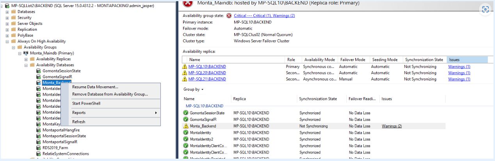
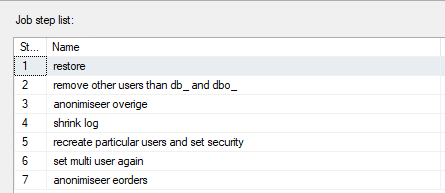
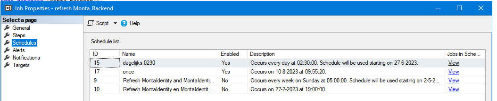

SQL Diversen
SQL database uit single user halen
Als een SQL-database in single user mode staat moet deze als volgt in multi-user-mode gezet worden.
use master
ALTER DATABASE xxxxxxx
SET MULTI_USER;
GO
Als er dan geklaagd wordt over aangelogde gebruikers dan kan met "execute sp_who2" gekeken worden welke connectie dat is en dan sluiten.
Mocht de database in "recovery pending" terecht gekomen zijn dan is de eerste stap "ALTER DATABASE Monta_Backend SET ONLINE".
SQL Always on HA uit suspended state halen
Door een error kan de synchronisatie van een database uit "Always on High Availability" in een suspended state terecht komen.
Dit kan opgelost worden via "Resume Data movement" :

MP-SQL04\TEST_BACKEND\Monta_Backend uit restoring mode halen
Elke nacht wordt er op de MP-SQL04 een restore uitgevoerd van de Monta_Backend, vanaf de laatste BAK-file op de MP-SQL10.
Dit wort uitgevoerd door de job "refresh Monta_Backend" op de MP-SQL04 die medio augustus 2023 de volgende stappen bevat:

Het kan voorkomen dat de "MP-SQL04\TEST_BACKEND\Monta_Backend" in restoring mode blijft staan.
Als de job "refresh Monta_Backend" nog loopt, stop deze dan.
De database Monta_Backend moet opnieuw aangemaakt worden.
Je kunt dan onderstaand script uitvoeren op de MP-SQL04.
Uiteraard zeer belangrijk dat je de quer op de MP-SQL04 aanmaakt !!!!
Daarom zit er nog een test in de query.
-- Indien "MP-SQL04\TEST_BACKEND\Monta_Backend" in restoring mode blijft staan
if @@servername = 'MP-SQL04\TEST_BACKEND' and (select state_desc from sys.databases where name = 'monta_backend') = 'RESTORING'
begin
drop database [Monta_Backend];
create database [Monta_Backend];
end;
Pas het "once" schedule van de job "refresh Monta_Backend" naar het huidige tijdstip + een paar minuten, zodat de job nogmaals gaat draaien.
